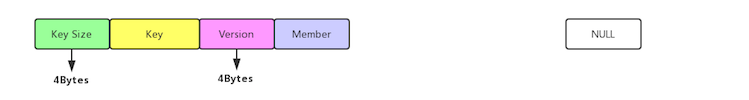
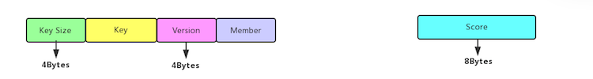
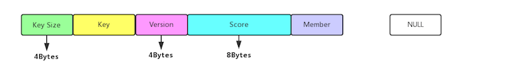
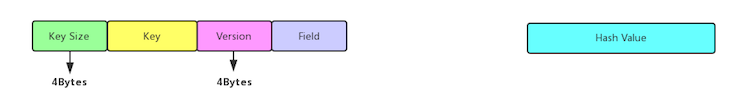
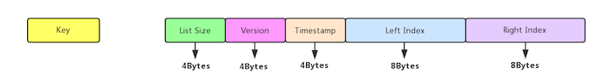
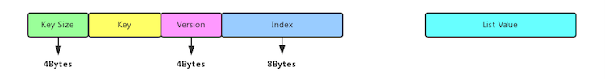
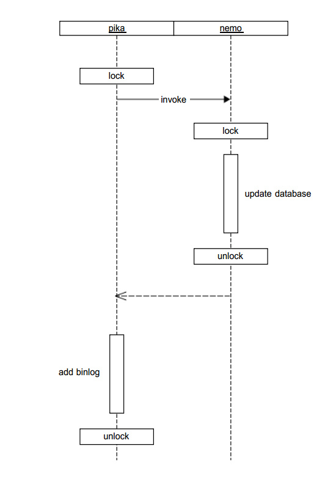

written by Alex Stocks on 2018/09/07，版权所有，无授权不得转载
愚人所在公司的大部分服务端业务无论是缓存还是存储颇为依赖 Codis，经过数次踩坑，其中一条经验教训是：线上 Redis 数据不要落地。
也就是说，我司的 Codis 集群中的 Redis，无论是 master 还是 slave，都没有打开 rdb 和 aof，所有数据都放在内存中。Codis 以这种方式“平静地”运行了一年，但是大伙终究心里石头无法落地，现状要求运维的同事在线上部署一种能高效运行且数据能落地的 “Codis”。
经交流和调研，今年七月份运维的同事决定采用 v2.3.x Pika 版的 Codis【下文提及的 Pika 不做特殊说明均指代 Pika 版本的 Codis 集群，pika 则指代单个 pika member】。在经过一段时间测试后，结果也令人满意：无论是在 SATA 盘还是 SSD 盘上，写【set，key 长度 16B， value 长度 30B】 qps 最差 60k/s，稳定情况下 80k/s，峰值可达 100k/s。于是 CTO 便拍板决定继续测试【到目前为止运维同事已经各种测试了两个月】，并根据公司以往的传统：使用开源系统，公司内部必须有人通读其代码，且能够解决掉在测试和线上遇到的问题。
最终这个“光荣任务”落在了愚人肩上。本文用来记录我阅读代码并在改进 Pika 【到 2018/09/07 为止主要是开发相关工具】过程中遇到的一些问题。
Ardb 作者在参考文档5文中对 Pika 的评价是 “直接修改了rocksdb代码实现某些功能。这种做法也是双刃剑，改动太多的话，社区的一些修改是很难merge进来的”。与几个比较主流的基于 RocksDB 实现的 KV 存储引擎（如 TiKV/SSDB/ARDB/CockroachDB）作比较，Pika 确实对 RocksDB 的代码侵入比较严重。至于为何修改这么大，最终的一个原因就是效率考虑，如参考文档13提到秒删功能时，说道 需要改动下层rocksdb，一定程度破坏了rocksdb的封装，各个模块之间耦合起来。另一个原因可能就是架构设计使然了，譬如 #2 数据备份# 一节中详述的 Nemo 自己实现的独立的备份引擎，而 RocksDB 自身是有备份机制的，之所以修改是因为 Pika 自身独立设计了一套独立于 RocksDB 的 binlog 存储机制。
八月初运维的同事提出了一个需求：把 Pika 数据实时同步到 Codis 集群，即把 Pika 集群作为数据固化层，把 Codis 作为数据缓存层。
刚开始得到这个需求，愚人的实现思路是：
根据这个思路，借鉴参考文档1开始实现V1 版本的工具【模仿 redis-port，愚人命名为 pika-port】。但在开发到最后一步时遇到这个问题：pika 以 mmap 方式向磁盘写入 binlog，redis-port 只需要读 binlog，而一般存储系统的读速度最低 5 倍于写速度，当 redis-port 追上 pika 的最新 binlog 文件数据后， 很可能读到截断的脏数据！
因当时刚开始读 pika 代码，遇到这个无法解决坎后便只能放弃这个方案了【后来把pika/src/pikabinlogsender_thread.cc 详细读懂后已经找到了解决方法，但此时 pika-port V2版本已经开发完毕】。
V1 虽然半途而废，但是开发过程中遇到的两个问题比较有意思，V2 版开发时也需要处理，所以记录如下：
pika 的 binlog record 在每个 redis 写命令后面追加了四个额外信息，分别是：Pika Magic [kPikaBinlogMagic]、server_id【用于双 master 同步时做去重】、binlog info【主要是执行命令的时间】以及 send hub 信息，需要过滤掉；
代码详见 include/pika_command.h:Cmd::AppendAffiliatedInfo，修改后的 redis 命令
set A 1格式为*7\r\n$3\r\nset\r\n$1\r\nA\r\n$1\r\n1\r\n$14\r\n__PIKA_X#$SKGI\r\n$1\r\n1\r\n$16\r\nj[m\r\n$1\r\n1\r\n这些补充信息在跨机房数据同步的情况下也很有用，详细内容见参考文档7
pika 内部有一个特殊的 set 用于记录当前 migrate 信息，set key 前缀是 _internal:slotkey:4migrate:，这个在进行数据同步时也需要过滤掉；
改进版本的 pika-port 相当于是 pika 和 Codis/Redis 之间的 proxy，实现流程是：
trysync 10.33.80.155 20847 0 0，10.33.80.155:20847 为 pika-port 的启动监听地址，后两个参数分别为 filenum 和 offset，同时监听 +1000 地址;spci sid指令，然后每隔 1s 向 pika 发送 ping指令，并等待 pika 回复的 pong ack；auth sid 指令成功后，就循环解析 binlog 并把数据增量同步给 pika-port；整个流程需要对 pika 的主从复制流程非常熟悉，关于主从复制流程可以详细阅读参考文档2。目前 pika-port 已经开发完毕，支持 v2.3.6 版本的 pika数据实时迁移到 Codis/Redis。
在开发过程中遇到了一些坑，有的是自己对 pika 理解不透彻，有的是 pika 自身一些缺陷，下面详细分小节记录之，以备将来作参考之用。
补1：目前我针对 v2.3.x 和 v3.0.x 两个主流版本的 Pika 分别开发了响应版本的 Pika-Port v1.4 和 pika-port v1.5，pika-port v1.5 已经合并到官方工具集，敬请使用。
Pika-port 与 pika 之间全量数据同步是通过 rsync 进行的，如果 pika-port 启动 rsync 失败【譬如rsync 监听端口被占用】，pika-port 所借鉴的 PikaTrysyncThread::ThreadMain 仅仅记录一个错误日志，然后继续相关流程。
合理的处理方法当然是启动 rsync daemon 失败退出即可，然官方相关处理流程如是，且出现这种错误概率极低，愚人处理方法就是暂时不处理这种 corner case。
补1：基于 Blackwidow 引擎的 pika-port 对 rsync 连接失败的处理方法是打印日志后退出程序。
Pika-port 会对 pika 发来的 redis 写指令进行非法性检查，过滤掉 command 为 auth 以及 key 为 _internal:slotkey:4migrate:前缀的非法指令。
在开发过程中，对非法指令的过滤是 MasterConn::DealMessage 处理的，过滤功能开发到是很简单，但是在开发测试过程中遇到这样一个坑：一旦 pika-port 遇到一个非法指令过滤掉后，pika 与 pika-port 之间的连接就断开发并疯狂重新建立连接。
经过对 RedisConn::ProcessInputBuffer 详细分析后才发现问题所在： MasterConn::DealMessage 遇到非法字符串后返回了一个负值作为错误标识，而 RedisConn::ProcessInputBuffer 调用这个函数后如果检测到结果是负值，就认为处理出错，最终会导致连接被关闭。
最终的解决方法当然是把返回结果改为 0 就可以了。
Pika-port V2开发完毕后测试过程中，遇到这样一个 corner case：通过 redis-cli 向 pika 写入 A 指令【譬如 set A 1】，在 60s 之后再次向 pika 写入 B 指令【譬如 set B 2】，然后立即写入 C 指令【譬如 set C 3】，最后 Codis/Redis 中只有 A 和 C 指令的数据，把 B 质量的数据丢了！
通过 tcpdump 在 pika 和 pika-port 之间进行抓包，分别得到如下两个关键结果【由于花费了半天时间不断重复测试以分析网络流程，所以两幅图时间先后有些错乱，不必较真】：
***图1: pika-port fin reset***
***图2: pika与pika-port 3 handshake***图1 是在 pika 向 pika-port 写入 B 指令时的网络流程，通过分析 图1 并结合相关代码分析，可以得到这样一个流程：
图2 则是 pika 向 pika-port 写入 C 指令的网络流程，同样分析后得到其流程是：
从 PikaTrysyncThread::ThreadMain 整个流程可以得出这样一个结论：pika 调用 write api 向 pika-port 写 B 指令的时候，并没有进行读操作以判断当前是否收到了 pika-port 发来的 rst 包，只是调用 write api 向 pika-port 进行了写，并根据其返回值为0就认为写成功了，进而理所当然的认为对端也能收到 B 指令。
可能有些对 tcp 四次挥手逻辑不甚明了的人对这个过程有些不甚了了，根本原因是 tcp 是双向连接，pika-port 只是关闭了 pika-port --> pika 这个方向的连接，而 pika --> pika-port 这个方向的单向连接还是存在的，只不过 pika-port 依赖的 pink 网络库在关闭一个单向连接时调用了 close 函数，导致结果是：pika-port 关闭了 pika-port --> pika 这个方向的连接的同时不再接收 pika --> pika-port 这个方向由 pika 发来的 B 指令数据！
解决问题的根本就在于正确处理 RST 信号，linux manpage 对 RST 信号的处理解释如下：
What happens if the client ignores the error return from readline and writes more data to the server? This can happen, for example, if the client needs to perform two writes to the server before reading anything back, with the first write eliciting the RST.
The rule that applies is: When a process writes to a socket that has received an RST, the SIGPIPE signal is sent to the process. The default action of this signal is to terminate the process, so the process must catch the signal to avoid being involuntarily terminated.
If the process either catches the signal and returns from the signal handler, or ignores the signal, the write operation returns EPIPE.上面很清晰的说明：写 B 指令时如果不读取 RST 相关错误信令，写 C 指令时 write 会返回 broken pipe 错误。所以正确的处理方法应该是：在进行 write 之前进行一次 read，以判断对端是否已经发来 fin 包；或者在 write 之后进行 read 以判断对端是否发来 rst 包。
考虑到 PikaTrysyncThread::ThreadMain 向 pika-port 发送数据的方式是 one way 的，pika-port 自身不会给 pika 回复任何消息，所以第二种方法成本略高。再考虑到这种情况是因为两个写指令之间写时间间隔太长所致，更进一步地处理方法是：每次调用 write 之后记录本次 write 执行的时间，下一次调用 write 时把系统当前时间与上一次 write 的时间进行比较，如果时间间隔超过某个阈值【譬如 1s】，则需要先进行读操作，判断出 pika-port --> pika 方向的连接正常，再调用 write 进行 pika --> pika-port 方向的数据写操作。
根据这个方案的相关改进代码写完，并已向 pika 官方提交了 pr，有待 merge。
在测试过程中，发现 pika 自身的 master 和 slave 进行数据复制时，并不会出现数据丢失的错误。经过加 log 分析，愚人在今日[2018/09/08] 下午 15:50pm 发现原因所在：pika slave 并不会对 pika master 之间的数据复制连接进行超时判断，仅仅依靠 tcp 自身的 KeepAlive 特性对连接进行保活【个人认为这种处理方法是不理智的】。至于代码层次原因，详见下图：

Pika-port 调用了上图第一个构造函数，直接导致 HolyThread::keepalivetime 参数被赋值 60，进而导致HolyThread::DoCronTask 超时检查逻辑被激活，然后 pika-port 与 pika 之间连接被 pika-port 关闭。
而 pika 自身则是调用上图的第二个构造函数，直接导致 HolyThread::keepalivetime 参数在被 gcc 编译时候被赋值 0，然后 pika slave 就不会去对它与 pika master之间连接作任何超时检查，所以也就不会出现丢数据的问题！
恰当的处理方法当然是重构两个构造函数，让其行为一致，然而作为著名项目的已有代码，相关改动牵一发而动全身，最终处理方法是我在 pr【对网络fd进行读写须用 recv，如果用 pread 则会收到 ESPIPE 错误】 中对相关函数所在的头文件中加上注释以进行调用提醒。
至于为何要依赖 tcp 自身的 keepalive 机制而不是在逻辑层对 tcp 连接进行超时判断，pika 开发者陈宗志给出了一个 blog 进行解释，仁者见仁智者见智，这个就不再次探讨了。
在处理这个问题时，与胡伟、郑树新、bert、hulk等一帮老友进行了相关探讨，受益匪浅，在此一并致谢！
Pika 官方 wiki [参考文档4] 有对其数据备份过程的图文描述，此文就不再进行转述。
RocksDB 默认的备份引擎 BackupEngine 通过 BackupEngine::Open 和 BackupEngine::CreateNewBackup 即实现了数据的备份【关于RocksDB 的 Backup 接口详见 参考文档6 6.8节】，而 Pika 为了效率起见重新实现了一个 nemo::BackupEngine，以进行异步备份。一个可能的原因是 Pika 的 WAL 日志是独立于 RocksDB 自身数据单独存储的，而不像诸如 TiKV 此类的存储引擎把 Log（Raft Log）也存入了 RocksDB，所以不得不自己实现了一套数据备份流程。
Pika 的存储引擎 nemo 依赖于其对 RocksDB 的封装引擎 nemo-rocksdb，下面结合参考文档4 从代码层面对备份流程进行详细分析。
注：本章描述的备份流程基于 pika 的 nemo 引擎，基本与最新的 blackwidow 引擎的备份流程无差。
nemo:DBNemoCheckpoint 提供了执行实际备份任务的 checkpoint 接口，其实际实现是 nemo:DBNemoCheckpointImpl，其主要接口如下：
class DBNemoCheckpointImpl : public DBNemoCheckpoint {
// 如果备份目录和源数据目录在同一个磁盘上，则对 SST 文件进行硬链接，
// 对 manifest 文件和 wal 文件进行直接拷贝
virtual Status CreateCheckpoint(const std::string& checkpoint_dir) override;
// 先阻止文件删除【rocksdb:DB::DisableFileDeletions】，然后获取 rocksdb:DB 快照，如 db 所有文件名称、
// manifest 文件大小、SequenceNumber 以及同步点(filenum & offset)
//
// nemo:BackupEngine 把这些信息组织为BackupContent
virtual Status GetCheckpointFiles(std::vector<std::string> &live_files,
VectorLogPtr &live_wal_files, uint64_t &manifest_file_size,
uint64_t &sequence_number) override;
// 根据上面获取到的 快照内容 进行文件复制操作
virtual Status CreateCheckpointWithFiles(const std::string& checkpoint_dir,
std::vector<std::string> &live_files, VectorLogPtr &live_wal_files,
uint64_t manifest_file_size, uint64_t sequence_number) override;
}CreateCheckpoint 接口可以认为是同步操作，它通过调用 GetCheckpointFiles 和 CreateCheckpointWithFiles 实现数据备份。
DBNemoCheckpointImpl::GetCheckpointFiles 先执行 “组织文件删除”，然后再获取快照内容。
DBNemoCheckpointImpl::CreateCheckpointWithFiles(checkpoint_dir, BackupContent) 详细流程:
注：BackupCentent 中别的文件如 CURRENT、SST、Manifest 都是文件名称，唯独 WAL 文件传递了相关的句柄 LogFile。
基于 DBNemoCheckpoint，nemo:BackupEngine 提供了一个异步备份五种类型数据文件的接口，其定义如下：
// Arguments which will used by BackupSave Thread
// p_engine for BackupEngine handler
// backup_dir
// key_type kv, hash, list, set or zset
struct BackupSaveArgs {
void *p_engine;
const std::string backup_dir;
const std::string key_type;
Status res;
};
struct BackupContent {
std::vector<std::string> live_files;
rocksdb::VectorLogPtr live_wal_files;
uint64_t manifest_file_size = 0;
uint64_t sequence_number = 0;
};
class BackupEngine {
public:
~BackupEngine();
// 调用 BackupEngine::NewCheckpoint 为五种数据类型分别创建响应的 DBNemoCheckpoint 放入 engines_，
// 同时创建 BackupEngine 对象
static Status Open(nemo::Nemo *db, BackupEngine** backup_engine_ptr);
// 调用 DBNemoCheckpointImpl::GetCheckpointFiles 获取五种类型需要备份的 快照内容 存入 backup_content_
Status SetBackupContent();
// 创建五个线程，分别调用 CreateNewBackupSpecify 进行数据备份
Status CreateNewBackup(const std::string &dir);
void StopBackup();
// 调用 DBNemoCheckpointImpl::CreateCheckpointWithFiles 执行具体的备份任务
// 这个函数之所以类型是 public 的，是为了在 线程函数ThreadFuncSaveSpecify 中能够调用之
Status CreateNewBackupSpecify(const std::string &dir, const std::string &type);
private:
BackupEngine() {}
std::map<std::string, rocksdb::DBNemoCheckpoint*> engines_; // 保存每个类型的 checkpoint 对象
std::map<std::string, BackupContent> backup_content_; // 保存每个类型需要复制的 快照内容
std::map<std::string, pthread_t> backup_pthread_ts_; // 保存每个类型执行备份任务的线程对象
// 调用 rocksdb::DBNemoCheckpoint::Create 创建 checkpoint 对象
Status NewCheckpoint(rocksdb::DBNemo *tdb, const std::string &type);
// 获取每个类型的数据目录
std::string GetSaveDirByType(const std::string _dir, const std::string& _type) const {
std::string backup_dir = _dir.empty() ? DEFAULT_BK_PATH : _dir;
return backup_dir + ((backup_dir.back() != '/') ? "/" : "") + _type;
}
Status WaitBackupPthread();
};nemo::BackupEngine 对外的主要接口是 Open、SetBackupContent、CreateNewBackup 和 StopBackup，分别用于 创建 BackupEngine 对象、获取快照内容、执行备份任务和停止备份任务。
PikaServer::Bgsave 是 redis 命令 bgsave 的响应函数，通过调用 nemo::BackupEngine 相关接口执行备份任务，下面先分别介绍其先关的函数接口。
这个函数用于创建数据备份目录，其流程为：
%Y%m%d%H%M%S 格式序列化为字符串；pika.conf:dump-path/%Y%m%d，如果目录已经存在，则删除之；pika.conf:dump-path/_FAILED。注意上面第二步的备份目录，之所以最终目录只有年月日信息，是因为最终只用了前 8 个字符串作为目录名称。
这个函数用于创建 BackupEngine 对象并进行获取五种数据类型的快照内容，其流程为：
nemo::BackupEngine::Open 创建 nemo::BackupEngine 对象；PikaServer::rwlock_::WLock 进行数据写入 RocksDB::DB 阻止；nemo::BackupEngine:: SetBackupContent 获取快照内容；PikaServer::rwlock_::UnLock 取消数据写入 RocksDB::DB 阻止。PikaClientConn::DoCmd 在执行写命令的时候，会先调用 g_pika_server->RWLockReader() 尝试加上读锁，如果正在执行 Bgsave 则此处就会阻塞等待。
这个函数用于执行具体的备份任务，其流程为：
PikaServer::InitBgsaveEnv 初始化 BGSave 需要的目录环境；PikaServer:: InitBgsaveEngine 创建 nemo::BackupEngine 对象和获取快照内容；nemo::BackupEngine::CreateNewBackup 执行备份任务。这个函数是 Bgsave 线程的执行体，其流程为：
PikaServer::RunBgsaveEngine 执行数据备份；pika.conf:dump-path/%Y%m%d/info 文件；pika.conf:dump-path/%Y%m%d 重命名为 pika.conf:dump-path/%Y%m%d_FAILED；bgsave_info_.bgsaving 置为 false。作为命令 bgsave 的响应函数，其流程非常简单：
bgsave_info_.bgsaving 值为 true，则退出，否则把其值置为 true；PikaServer::bgsave_thread_，通过调用 PikaServer::DoBgsave 函数完成备份任务。Pika 存储引擎的最基本作用就是把 Redis 的数据结构映射为 RocksDB 的 KV 数据存入其中。本节主要分析 Pika 最新版的存储引擎 Blackwidow，作为对比需要稍微提及其前一个版本 Nemo。
Pika 存储系统中另外一个比较重要的概念是 timestamp 和 version，其实都与数据删除功能有关。Redis 中数据被淘汰有两种常见场景：添加（set） key 时就设置了 ttl，显式调用 del 命令对 key 进行删除。timestamp 与添加（set） key 时的 ttl 有关，其值为系统当前 unix 时间与 tll 之和，其意义就是数据的超时时间(系统 unix time)。
version 则与 del 命令删除 key 相关，参照 base_meta_value_format.h:ParsedBaseMetaValue::UpdateVersion, 可知 key 的初始 version值为执行添加/删除/更新指令时的当前系统时间【第一次添加 key】 或者 当前值自增【第二次以及后续多次对同一个 key 执行添加/删除/更新指令】。
除了 strings 之外的其他数据结构【string 没有 version】，其 field/member 也有 version 值，field/member version 大于 key 的 version 时才会被认为是有效的 field/member，其初始值等于 key version。参考文档13 通过 version 实现了在 “秒删大量的key” 的场景下 “不删除, 只做标记, 时间复杂度O(1)”，“效率就够了”。
秒删操作可以认为是只做标记，把 key version 设置为当前时间，集合中 field/member version 小于 key version 的都是过时的，因为当前所有的 field/member 被添加/删除/更新时其 version 值为写入时的 key version，其值一定小于最新的 key version 值。执行删除 set/zset/list/hashtable 时，base_meta_value_format.h:ParsedBaseMetaValue::InitialMetaValue 函数会被调用，其操作为：
Pika 后续执行 get 指令时，会依据 timestamp 和 version 判断数据是否过时。Rocksdb 进行 compaction 时，也会调用各个 Filter 接口依据 timestamp 和 version 判定数据是否已经超时，若超时则进行物理删除。参考文档13 给出了各个操作过程中 version 的处理：
Put：查询key的最新版本，后缀到val；
Get：查询key的最新版本，过滤最新的数据；
Iterator： 迭代时，查询key的版本，过滤旧版本数据；
Compact：数据的实际删除是在Compact过程中，根据版本信息过滤；Nemo 自身并不直接使用 RocksDB，而是使用 nemo-rocksdb --- 一个对 RocksDB 进行了一层薄薄封装的存储层。
nemo-rocksdb 的主要类 DBNemo 继承自 rocksdb::StackableDB，用于替代 rocksdb::DB，主要作用是给 KV 的 Key 添加 timestamp 和 version 以及 Key 的类型信息，以实现 Redis 对数据的时限【称之为 ttl】要求：在 RocksDB 进行 compaction 的时候预先检查数据是否过期，过期则直接淘汰。
RocksDB 进行 compaction 的时候需要对每个 key 调用留给使用者的接口 CompactionFilter 以进行过滤：让用户解释当前 key 是否还有效。nemo-rocksdb 封装了一个 NemoCompactionFilter 以实现过时数据的检验，其主要接口是 rocksdb:CompactionFilter::Filter。RocksDB 在进行 compaction 还会调用另一个预备给用户的接口 rocksdb::MergeOperator，以方便用户自定义如何对同一个 key 的相关操作进行合并。
nemo-rocksdb 一并重新封装了一个可以实现 更新 意义的继承自 rocksdb::MergeOperator 的 NemoMergeOperator，以在 RocksDB 进行 Get 或者 compaction 的时候对 key 的一些写或者更行操作合并后再进行，以提高效率。至于 rocksdb::MergeOperator 的使用，见参考文档6。
Pika 执行写指令时先更新 Pika DB，然后才把写指令写入 binlog 中。Nemo 版的 Pika 在执行写指令过程中使用了行锁，参考文档14 对行锁的定义是 用于对一个key加锁，保证同一时间只有一个线程对一个key进行操作。Pika 中每个 key 之间相互独立，行锁就足以保证并发时候的数据一致性，且 锁定粒度小，也可以保证数据访问的高效性。#3.6.1# 小节在代码层面分析行锁的具体实现。
相对于需要对 RocksDB 封装了一层的 nemo-rocksdb 的存储引擎 Nemo，Blackwidow 则更多地使用了 RocksDB 暴露出来的一些常用接口实现了 Redis 数据到 RocksDB KV 的映射。
Blackwidow 的数据组织格式与 Nemo 做了两个大的调整：
rocksdb::CompactionFilter 调用暴露给用户的接口 CompactionFilter::Filter 的时候，需要用户自己对相关数据的含义进行解释并处理，下面分小节介绍相关数据类操作。
base_value_format.h:blackwidow::InternalValue 用于存储 string 类型的 Value 和 其他四种类型的 meta Value，其主要类成员如下：
class InternalValue {
public:
virtual size_t AppendTimestampAndVersion() = 0;
protected:
char space_[200];
char* start_;
Slice user_value_; // 用户原始 key
int32_t version_;
int32_t timestamp_;
};blackwidow::InternalValue 主要的接口是 Encode，其作用是把 value 的相关信息序列化成一个字节流，其工作流程如下：
key + timestamp + version 拼接后的总长度不大于 200B，则 InternalValue::start_ = InternalValue::space_，即使用 InternalValue::space_ 存储序列化后的字节流，否则就在堆上分配一段内存用于存储字节流；key + timestamp + version 进行序列化并存入 InternalValue::start_。继承自 blackwidow::InternalValue 的 base_meta_value_format.h:BaseMetaValue 主要用于对 meta value 进行序列化。
Set meta 存储格式如下：
Zset meta 存储格式如下：
Hashtable meta 存储格式如下：
base_value_format.h:blackwidow::ParsedInternalValue 用于对 string 类型的 Value 和 其他四种类型的 meta Value 进行反序列化，其主要类成员如下：
class ParsedInternalValue {
public:
// 这个构造函数在 rocksdb::DB::Get() 之后会被调用，
// 用户可能在此处对读取到的值修改 timestamp 和 version，
// 所以需要把 value 的指针赋值给 value_
explicit ParsedInternalValue(std::string* value) :
value_(value),
version_(0),
timestamp_(0) {
}
// 这个函数在 rocksdb::CompactionFilter::Filter() 之中会被调用，
// 用户仅仅仅对 @value 进行分析即可，不会有写动作，所以不需要
// 把 value 的指针赋值给 value_
explicit ParsedInternalValue(const Slice& value) :
value_(nullptr),
version_(0),
timestamp_(0) {
}
protected:
virtual void SetVersionToValue() = 0;
virtual void SetTimestampToValue() = 0;
std::string* value_;
Slice user_value_; // 用户原始 value
int32_t version_;
int32_t timestamp_;
};继承自 blackwidow::ParsedInternalValue 的 base_meta_value_format.h:blackwidow::ParsedBaseMetaValue 主要用于对 meta value 进行反序列化，需要注意的是 blackwidow::ParsedBaseMetaValue 多了一个 blackwidow::ParsedBaseMetaValue::count_ 成员，用于记录集合中成员【field/member】的数目，这个数值一般位于字节流的前四个字节。
继承自 rocksdb::CompactionFilter 的 base_filter.h:blackwidow::BaseMetaFilter 在调用其 Filter 接口的时候，就使用 blackwidow::ParsedInternalValue 对 meta value 进行了解析处理，其工作流程如下：
使用 blackwidow::BaseMetaFilter 的 blackwidow::BaseMetaFilterFactory 会被设置为 hashtable/set/zset 三种数据结构 meta ColumnFamily 的 ColumnFamilyOptions 的 compaction_filter_factory。
base_data_key_format.h:blackwidow::BaseDataKey 用于存储 hashtable/zset/set 三种类型 Data ColumnFamily 的 Key【下文称为 data key】，其主要类成员如下：
class BaseDataKey {
public:
const Slice Encode();
private:
char space_[200];
char* start_;
Slice key_; // hashtable/zset/set key
int32_t version_;
Slice data_; // field/member
};Set data 存储格式如下：

Zset data 的 data_cf 存储格式如下：

Zset data 的 score_cf 存储格式如下：

Hashtable data 存储格式如下：

blackwidow::BaseDataKey 主要的接口是 Encode，其作用是把 KV Key 的相关信息序列化成字节流，其工作流程如下：
key size(4B) + key + version + field 拼接后的总长度不大于 200B，则 BaseDataKey::start_ = BaseDataKey::space_，即使用 InternalValue::space_ 存储序列化后的字节流，否则就在堆上分配一段内存用于存储字节流；base_data_key_format.h:blackwidow::ParsedBaseDataKey 用于对 hashtable/zset/set 三种类型的 data key 进行反序列化，其主要类成员如下：
class ParsedBaseDataKey {
protected:
Slice key_;
int32_t version_;
Slice data_;
};其主要反序列化解析动作在构造函数中完成，此处就不再详细分析其工作流程。
继承自 rocksdb::CompactionFilter 的 base_filter.h:blackwidow::BaseDataFilter 主要用于对 data KV 进行解析，其主要成员如下：
class BaseDataFilter {
private:
rocksdb::DB* db_; // 所在的 DB
std::vector<rocksdb::ColumnFamilyHandle*>* cf_handles_ptr_; // 所在的 ColumnFamily
rocksdb::ReadOptions default_read_options_;
mutable std::string cur_key_;
mutable bool meta_not_found_;
mutable int32_t cur_meta_version_;
mutable int32_t cur_meta_timestamp_;
};在调用其 Filter 接口的时候，就使用 blackwidow::ParsedBaseDataKey 对 data key 进行了解析处理，其工作流程如下：
2 若 cur_key_ 与 hashtable/zset/set key 不相等，则从 meta ColumnFamily 中获取 hashtable/zset/set 对应的 meta value；
3 获取系统当前时间；
4 若 cur_meta_timestamp_ 不为零 且 cur_meta_timestamp_ 小于 系统当前时间，则数据可以淘汰；
5 若 data key 的 version 小于 cur_meta_version_，秒删功能启用，数据可以淘汰；
6 否则数据仍然有效，不能淘汰。
使用 blackwidow::BaseDataFilter 的 blackwidow::BaseDataFilterFactory 会被设置为 hashtable/set/zset 三种数据结构 data ColumnFamily 的 ColumnFamilyOptions 的 compactionfilterfactory。
不同于其他四种数据结构，Strings 因其数据结构比较简单，不需要 meta 数据，所以的数据直接存入默认的 ColumnFamily，相关的 Blackwidow 类在此节单独列明。
strings_value_format.h:blackwidow::StringsValue 继承自 blackwidow::InternalValue，其作用自然是序列化 KV value，其主要接口 AppendTimestampAndVersion 代码如下：
class StringsValue : public InternalValue {
public:
explicit StringsValue(const Slice& user_value) :
InternalValue(user_value) {
}
virtual size_t AppendTimestampAndVersion() override {
size_t usize = user_value_.size();
char* dst = start_;
memcpy(dst, user_value_.data(), usize);
dst += usize;
EncodeFixed32(dst, timestamp_);
return usize + sizeof(int32_t);
}
};从上面代码可以看出，Strings 没有 version 概念，其实际存储格式如下：

strings_value_format.h:blackwidow::ParsedStringsValue 继承自 blackwidow::ParsedInternalValue，其作用自然是反序列化 KV value，获取 V 与 timestamp。
继承自 rocksdb::CompactionFilter 的 strings_filter.h:blackwidow::StringsFilter 通过 blackwidow::ParsedStringsValue 对 Strings KV 进行解析，其 Filter 接口依据 V 中的 timestamp 与系统当前时间进行比较，如果 V 的 timestamp 小于系统当前时间，则数据过时可以淘汰。
使用 blackwidow::StringsFilter 的 blackwidow::StringsFilterFactory 会被设置为 Strings 的 default ColumnFamily 的 ColumnFamilyOptions 的 compactionfilterfactory。
不同于 hashtable/zset/set，Lists 数据集合中各个 node 之间有先后顺序且其顺序在写入数据的时候已经指定，所以其 meta 和 data 组织方式也与其他三者有所不同。
lists_meta_value_format.h:blackwidow::ListsMetaValue 继承自 blackwidow::InternalValue，其作用是序列化 meta value，其主要接口 Encode 代码如下：
class ListsMetaValue : public InternalValue {
public:
virtual size_t AppendTimestampAndVersion() override {
size_t usize = user_value_.size();
char* dst = start_;
memcpy(dst, user_value_.data(), usize);
dst += usize;
EncodeFixed32(dst, version_);
dst += sizeof(int32_t);
EncodeFixed32(dst, timestamp_);
return usize + 2 * sizeof(int32_t);
}
virtual size_t AppendIndex() {
char * dst = start_;
dst += user_value_.size() + 2 * sizeof(int32_t);
EncodeFixed64(dst, left_index_);
dst += sizeof(int64_t);
EncodeFixed64(dst, right_index_);
return 2 * sizeof(int64_t);
}
static const size_t kDefaultValueSuffixLength = sizeof(int32_t) * 2 +
sizeof(int64_t) * 2;
virtual const Slice Encode() override {
size_t usize = user_value_.size();
size_t needed = usize + kDefaultValueSuffixLength;
char* dst;
if (needed <= sizeof(space_)) {
dst = space_;
} else {
dst = new char[needed];
}
start_ = dst;
size_t len = AppendTimestampAndVersion() + AppendIndex();
return Slice(start_, len);
}
private:
uint64_t left_index_;
uint64_t right_index_;
};从上面代码可以看出，Lists meta value 除了 version 和 timestap之外，还有两个 index，分别指向链表的左右边界。
lists_meta_value_format.h:blackwidow::ParsedListsMetaValue 继承自 blackwidow::ParsedInternalValue，其作用是反序列化 meta value，获取 version、timestamp、count、left_index_ 和 right_index_。
class ParsedListsMetaValue : public ParsedInternalValue {
private:
uint64_t count_;
uint64_t left_index_;
uint64_t right_index_;
};Lists meta 的具体存储格式如下：

lists_data_key_format.h:blackwidow::ListsDataKey 用于存储 lists 的 data key，lists data key 的主要成员就是其在 lists 中的序号 index，其所有类成员如下：
class ListsDataKey {
public:
const Slice Encode();
private:
char space_[200];
char* start_;
Slice key_; // hashtable/zset/set key
int32_t version_;
uint64_t index_; // list node index
};blackwidow::ListsDataKey 与 blackwidow::BaseDataKey 的差异在于：BaseDataKey 中存储了 key data，而 ListsDataKey 存储了 list node index。blackwidow::ListsDataKey 的序列化函数 Encode 大致与 blackwidow::BaseDataKey::Encode 类似，此处不再详述。
类似于 blackwidow::ParsedBaseDataKey，lists 数据结构也有一个反序列化数据结构 blackwidow::ParsedListsDataKey，其结构如下：
class ParsedListsDataKey {
private:
Slice key_;
int32_t version_;
uint64_t index_;
};其与 blackwidow::ParsedBaseDataKey 的差异同样也是：ParsedBaseDataKey 中存储了 key data，而 ParsedListsDataKey 存储了 list node index。
Lists data 的具体存储格式如下：

继承自 rocksdb::CompactionFilter 的 lists_filter.h:blackwidow::ListsMetaFilter 通过 blackwidow::ParsedListsMetaValue 对 Lists meta value 进行解析，其 Filter 接口依据 meta value 中的 timestamp/version 与系统当前时间进行比较，流程与 #3.2.2# 小节中 base_filter.h:blackwidow::BaseMetaFilter::Filter 接口类似，此处不再详述。
使用 blackwidow::ListsMetaFilter 的 blackwidow::ListsMetaFilterFactory 会被设置为 Lists 的 default ColumnFamily 的 ColumnFamilyOptions 的 compactionfilterfactory。
继承自 rocksdb::CompactionFilter 的 lists_filter.h:blackwidow::ListsMetaFilterFactory 通过 blackwidow:: ParsedListsDataKey 对 Lists data key 进行解析，其 Filter 接口依据 data key 中的 timestamp/version 与系统当前时间进行比较，流程与 #3.2.4# 小节中 base_filter.h:blackwidow::BaseDataFilter::Filter 接口类似，此处不再详述。
使用 blackwidow::ListsDataFilter 的 blackwidow::ListsDataFilterFactory 会被设置为 Lists 的 datacf ColumnFamily 的 ColumnFamilyOptions 的 compactionfilter_factory。
RocksDB 提供了一个名为 Comparator 的接口，用于对 Column Family 或者整个 Database 的 sst file 的 KV 进行排序。
Lists 的有序体现在其 data_cf Column Family 下的数据有序性，Pika 提供了继承自 RocksDB::Comparator 的 blackwidow::ListsDataKeyComparatorImpl 对 data key 进行排序。RocksDB::Comparator 的主要接口是 Compare 函数和 Equal 函数，其定义形式如下：
// A Comparator object provides a total order across slices that are
// used as keys in an sstable or a database. A Comparator implementation
// must be thread-safe since rocksdb may invoke its methods concurrently
// from multiple threads.
class Comparator {
public:
virtual ~Comparator() {}
// Three-way comparison. Returns value:
// < 0 iff "a" < "b",
// == 0 iff "a" == "b",
// > 0 iff "a" > "b"
virtual int Compare(const Slice& a, const Slice& b) const = 0;
// Compares two slices for equality. The following invariant should always
// hold (and is the default implementation):
// Equal(a, b) iff Compare(a, b) == 0
// Overwrite only if equality comparisons can be done more efficiently than
// three-way comparisons.
virtual bool Equal(const Slice& a, const Slice& b) const {
return Compare(a, b) == 0;
}
};custom_comparator.h:ListsDataKeyComparatorImpl 的主要接口 Compare 函数流程如下：
custom_comparator.h:ListsDataKeyComparatorImpl 存在的形式是 Lists 的 data_cf Column Family 的 Options.comparator 被 RocksDB 调用。
custom_comparator.h 文件中还有一个 ZSetsScoreKeyComparatorImpl 接口类，用于 zset 集合下的 score_cf 进行排序，其排序方式是：同一个zset中score to member的data_key会首先按照score来排序， 在score相同的情况下再按照member来排序【摘自参考文档8】。
官方在 Pika 3.x 中使用了最新改进的的 Binlog。最新版的 Binlog 内容其实并无多大改进，无非是把原来放在 Binlog Redis 写命令后面追加的四个额外信息【详见 #1.1 节】挪到了前面，但是好处是把二者做了分离，Binlog Info 与 Redis 命令不再混淆在一起。更重要的是整个协议为未来改进留下了可扩展空间，不用每次升级 Binlog 协议把整个协议格式完全推动重新设计一遍。
最新版协议网络格式如下：
| ********** Header ************ | ******* Body ***** |
| <Transfer Type> | <Body Lenth> | [BinlogItem] RESP |
2 Bytes 4 Bytes注：RESP 意为 Redis 序列化协议。
Transfer Type 对应的代码是：
c++c++
// pika/src/pika_new_master_conn.h
enum TransferOperate{
kTypeAuth = 1,
kTypeBinlog = 2
};
用于说明 Body 是用于验证 session id 的 auth 包 还是传递 Redis 写命令的 Binlog 包。
从 pika/src/pika_new_master_conn.cc:MasterConn::GetRequest 函数可以看出， 如若是 auth 包，则 Body 内容只有 auth sid；如果是 binlog 包，则 body 是 BinlogItem + RESP。BinlogItem 详细内容见 pika_binlog_transverter.h:BinlogItem 定义，而 RESP 则是 Redis 写命令。
以后再升级 Binlog，估计只需要扩展 Transfer Type 即可，可以保持向后兼容。
Pika 把心跳和数据发收分开处理，参考文档9这样解释：第一为了提高同步速度，sender只发不收，receiver只收不发，心跳是又单独的线程去做，如果心跳又sender来做，那么为了一秒仅有一次的心跳还要去复杂化sender和receiver的逻辑；第二其实前期尝试过合并在一起来进行连接级别的存活检测，当写入压力过大的时候会心跳包的收发会延后，导致存活检测被影响，slave误判master超时而进行不必要的重连。
个人对于这一处理机制持有异议，心跳和数据收发逻辑处理分开后，有这样一种 case 这种机制无法很好处理：如果 slave 逻辑处理函数写流程机制有问题【譬如陷入无限循环或者写 log 时因为 log 库的 bug 而永久阻塞】，把收数据处理逻辑处理流程的线程阻塞住（或者说叫做卡死），整个进程其实处于假死状态（什么也不做，与僵尸无疑），但是心跳逻辑线程正常工作，其结果就是 master 以为 slave 正常存活而继续发送数据！此时相对于不能正常 work， “重连的代价” 就不算什么了。所以个人以为应当把心跳和逻辑处理机制在同一个线程【或者线程池】处理。
2018/11/13日读到参考文档19，其中提到 心跳包（监控包）与业务包采用相同的通道：当业务包处理能力不足而阻塞时会导致心跳包处理超时，而引起DPDK LD的误判。此时虽然部分请求可能会出现短暂超时，但服务器本身并没有出现故障，总体服务还是可用的。此时将服务器剔除出集群并不是一个正确的做法，最终腾讯的 HttpDNS 的做法是 心跳包与业务包通道的隔离：在dispatch进程与业务处理进程间设计只存储心跳包的ring， 用于进行心跳包的传输。
结合 Pika 的心跳与逻辑线程处理隔离，现在想来是有道理的。心跳的意义仅在于探测网路通畅与否，不应该作为逻辑处理能力的判断标准。每个节点提供服务的能力（或者称为逻辑处理能力）是一个动态变化的过程，其服务能力权衡应该是一个区间内浮动，其状态变化是一个灰度的过程，而非仅仅 0【不可用】 和 1【可用】 两个状态，不能仅仅因为一时的服务能力下降就将它从可能节点中摘除掉。因此服务节点服务能力的权衡应该是逻辑（业务）层负载均衡算法的职责，而非心跳的职责，所以二者分开也是有道理的。如果有应用【如早期的kafka consumer sdk】把二者合并在一起，可能是不想采用复杂的负载均衡衡量算法，以最简单的 0【不可用】 和 1【可用】 两个相态对节点的处理能力进行判断。
Pika 主从对 binlog 的处理不一样，参考文档9这样描述：master是先写db再写binlog，之前slave只用一个worker来同步会在master写入压力很大的情况下由于slave一个worker写入太慢而造成同步差距过大，后来我们调整结构，让slave通过多个worker来写提高写入速度，不过这时候有一个问题，为了保证主从binlog顺序一致，写binlog的操作还是只能又一个线程来做，也就是receiver，所以slave这边是先写binlog在写db，所以slave存在写完binlog挂掉导致丢失数据的问题，不过redis在master写完db后挂掉同样会丢失数据，所以redis采用全同步的办法来解决这一问题，pika同样，默认使用部分同步来继续，如果业务对数据十分敏感，此处可以强制slave重启后进行全同步即可。
Pika master 处理写请求的流程是先写 DB 后生成对应的 binlog，似乎与时下常见的 leader-follower 架构下 leader处理写请求流程 “先把写请求内容写入 WAL（类似于binlog） 然后再应用到状态机（DB）” 不同，个人以为可能的一个原因是因为 leader-follower 对写请求的处理是一种同步机制，而 master-slave 对写请求的处理是一个异步过程。假设 master-slave 架构下 master 对写请求的处理过程是先写 binlog 然后再写 DB，则 slave DB 的数据有可能比 master DB 数据更新：写请求内容被 master 写入 binlog 后迅速同步给slave，然后 slave 将其写入 DB，而此时 master 还未完成相应数据的更新。可以类比地，同样使用了 master-slave 架构的 Redis master 收到写请求之后先把数据写入 DB，然后再放入 backlog 同步给 slave。
当数据备份完成后，过时的 binlog 文件就应当及时地被清理掉，这个工作是由 Purge 线程完成的。
欲清理过时的 binlog 文件，必须先获取所有的 binlog 文件集合，这个工作由 PikaServer::GetBinlogFiles 完成，其流程为：
write2file，然后构建一个 index:binlog_filename 为 pair 的 binlog map。判定 binlog 是否过时/被加锁其实就是判定其是否在同步给 slave 的 binlog 集合范围内。
binlog 过时判定由PikaServer::CouldPurge完成，某个后缀为 @index 的数据加锁判断流程为：
获取最大可删除 binlog 文件的 index 函数 PikaServer::GetPurgeWindow 流程与 PikaServer::CouldPurge 非常类似，一并说明如下：
函数 PikaServer::GetPurgeWindow 会被执行 info 命令的函数 InfoCmd::InfoLog 调用。
过时 binlog 淘汰工作具体由 PikaServer::PurgeFiles 完成，其流程为：
2 获取配置文件参数 expire-logs-nums，计算本次应当删除文件的上限数目 remain_expire_num；
参考文档16 中对这个参数的说明是：log日志的过期数量，若当前 log 的数量大于 expire_logs_nums，则认为删除 expire_logs_nums 之前的log是安全的。
参考文档17 进一步指出：
首次同步时，将完整数据传输到从服务器上会比较慢，需要设置更大的 expire-logs-nums 值，避免数据同步过慢，同步完成时起始 binlog 已被删除。remain_expire_num = binlogs.size() - expire-logs-nums
3 获取配置文件参数 expire-logs-days，其为过期文件天数；
4 遍历 map @binlogs，判定某个 @index 对应的 binlog 是否应该删除；
上面条件优先级从上到下递减，且满足其中一个条件即可，也可以看出 expire-logs-nums 优先级高于 expire-logs-days。
5 当 @index 对应的 binlog 满足上述判定条件时，还要满足下面两个条件，若满足则 binlog 应当被物理删除之，然后对 @remainexpirenum 进行自减；
上述两个条件满足其中一个即可，优先级从上到下递减。
流程 4 的三个条件之间是逻辑 OR 关系，流程 5 的两个条件之间也是逻辑 OR 关系，但流程 4 的条件和流程 5 的条件之间是逻辑 AND 关系。
类似于 bgsave 工作，Purge 工作实际上是有 purge 线程完成的，具体线程函数是 PikaServer::PurgeLogs。在同一时刻，只能启动一个 purge 工作。Purge 线程开始工作时设置 PikaServer::purging_ 为 true，purge 工作完成后设置其为 false。
用户如果人工向 pika 发出 purgelogsto 指令 (详见参考文档18，则 PikaServer 会通过 PurgelogstoCmd::Do 启动 purge 线程函数，调用时方式为 PurgeLogs(num_, true, false)：
- 起始 file index 为用户指令指定的 @index；
- 手工调用参数 @manual 为 true；
- 强制删除参数 @force 为 false。PikaServer 自身执行定时任务 PikaServer::DoTimingTask 时也会启用 purge 任务 PikaServer::AutoPurge，调用方式为 PurgeLogs(0, false, false)：
- 起始 file index 为 0；
- 手工调用参数 @manual 为 false；
- 强制删除参数 @force 为 false。上述条件即意味着只删除满足 pika.conf 中 expire-logs-nums/expire-logs-days 两个配置项的超数目/过时文件。
在执行 slaveof 命令时，其指令函数 SlaveofCmd::Do 也会会启用 purge 任务，调用方式为 PurgeLogs(filenum_ - 1, true, true)：
- 起始 file index 为 filenum_；
- 手工调用参数 @manual 为 true；
- 强制删除参数 @force 为 true。调用函数上方的注释 Before we send the trysync command, we need purge current logs older than the sync point 说明了一切。
参考文档8 提到 Blackwidow在锁的实现上参照了RocksDB事务里锁的实现方法，而弃用了之前Nemo的行锁，所以在多线程对同一把锁有抢占的情况下性能会有所提升。
下面先介绍 Nemo 引擎的行锁。
本章节开头的地方提到了 Nemo 存储引擎使用了行锁，参考文档14 对行锁的定义是 用于对一个key加锁，保证同一时间只有一个线程对一个key进行操作。

Nemo 行锁的原理如上图，参考文档14 提到对同一个key，加了两次行锁，在实际应用中，pika上所加的锁就已经能够保证数据访问的正确性。如果只是为了pika所需要的业务，blackwidow层面使用行锁是多余的，但是blackwidow的设计初衷就是通过对rocksdb的改造和封装提供一套完整的类redis数据访问的解决方案，而不仅仅是为pika提供数据库引擎。这样设计大大降低了pika与blackwidow之间的耦合，也使得blackwidow可以被单独拿出来测试和使用，在pika中的数据迁移工具就是完全使用blackwidow来完成，不必依赖任何pika相关的东西。
参考文档14对其具体实现的文字描述如下：在pika系统中，一把行锁就可以维护所有key。在行锁的实现上是将一个key与一把互斥锁相绑定，并将其放入哈希表中维护，来保证每次访问key的线程只有一个，但是不可能也不需要为每一个key保留一把互斥锁，只需要当有多条线程访问同一个key时才需要锁，在所有线程都访问结束之后，就可以销毁这个绑定key的互斥锁，释放资源。
行锁代码层面实现是 slash::RecordLock，其基础是 slash::RefLock 和 slash::RecordLock:
class RefMutex {
public:
void Ref();
void Unref();
bool IsLastRef() {
return refs_ == 1; // 给一个 key 刚加上锁时，其值会被赋值为 1
}
private:
pthread_mutex_t mu_; // 从 RecordMutex::Lock 可见，此锁专门用于 lock/unlock redis key
int refs_; // 用于记录加锁次数
};
void RefMutex::Ref() {
refs_++;
}
void RefMutex::Unref() {
--refs_;
if (refs_ == 0) { // 初始时 refs_ 值就为0
delete this;
}
}
class RecordMutex {
public:
void Lock(const std::string &key);
void Unlock(const std::string &key);
private:
Mutex mutex_; // 此锁用于 lock/unlock @records_
std::unordered_map<std::string, RefMutex *> records_;
};
void RecordMutex::Lock(const std::string &key) {
mutex_.Lock();
std::unordered_map<std::string, RefMutex *>::const_iterator it = records_.find(key);
if (it != records_.end()) {
RefMutex *ref_mutex = it->second;
ref_mutex->Ref();
mutex_.Unlock();
ref_mutex->Lock();
} else {
RefMutex *ref_mutex = new RefMutex();
records_.insert(std::make_pair(key, ref_mutex));
ref_mutex->Ref(); // 第一次插入时其值即为 1
mutex_.Unlock();
ref_mutex->Lock();
}
}
void RecordMutex::Unlock(const std::string &key) {
mutex_.Lock();
std::unordered_map<std::string, RefMutex *>::const_iterator it = records_.find(key);
if (it != records_.end()) {
RefMutex *ref_mutex = it->second;
if (ref_mutex->IsLastRef()) {
records_.erase(it); // 无引用，则从 record map 中删除
}
ref_mutex->Unlock();
ref_mutex->Unref(); // 此时 ref_mutex::refs_ 肯定为0，ref_mutex 可以被释放了
}
mutex_.Unlock();
}
class RecordLock {
public:
RecordLock(RecordMutex *mu, const std::string &key)
: mu_(mu), key_(key) {
mu_->Lock(key_);
}
~RecordLock() { mu_->Unlock(key_); }
private:
RecordMutex *const mu_;
std::string key_;
};
slash::RefMutex 用于对 key 加锁，并附带记录了引用次数。
slash::RecordMutex 底层是一个类型为 std::unorderedmap 的 lock map：**slash::RecordMutex::records**，存放所有加锁的 key 和它的 lock。
基于 slash::RecordMutex 之上的 slash::RecordLock 类似一个 LockGuard，不需使用者每次需要对一个 key 加锁的时候都由使用者自己生成一个 lock，简直太 tmd 好用了！
nemo 引擎具体使用行锁的代码块摘要如下：
namespace nemo {
class Nemo {
private:
std::unique_ptr<rocksdb::DBNemo> kv_db_;
std::unique_ptr<rocksdb::DBNemo> hash_db_;
//std::unique_ptr<rocksdb::DB> hash_db_;
std::unique_ptr<rocksdb::DBNemo> list_db_;
std::unique_ptr<rocksdb::DBNemo> zset_db_;
std::unique_ptr<rocksdb::DBNemo> set_db_;
port::RecordMutex mutex_hash_record_;
port::RecordMutex mutex_kv_record_;
port::RecordMutex mutex_list_record_;
port::RecordMutex mutex_zset_record_;
port::RecordMutex mutex_set_record_;
};
}类似于 Slash::RecordMutex，Blackwidow 有一个 blackwidow::LockMgr。
namespace blackwidow {
// Default implementation of MutexFactory.
class MutexFactoryImpl : public MutexFactory { // 用于方便创建 Mutex & CondVar
public:
std::shared_ptr<Mutex>
MutexFactoryImpl::AllocateMutex() {
return std::shared_ptr<Mutex>(new MutexImpl());
}
std::shared_ptr<CondVar>
MutexFactoryImpl::AllocateCondVar() {
return std::shared_ptr<CondVar>(new CondVarImpl());
}
};
struct LockMapStripe { // lock map 的一个桶
explicit LockMapStripe(std::shared_ptr<MutexFactory> factory) {
stripe_mutex = factory->AllocateMutex();
stripe_cv = factory->AllocateCondVar();
}
// Mutex must be held before modifying keys map
std::shared_ptr<Mutex> stripe_mutex; // 对当前桶加锁
// Condition Variable per stripe for waiting on a lock
// 当桶中已经存放了某个 key 时候，说明此 key 已经被加上锁，则需要死等，一个加锁者退出时会通过这个变量发出通知
std::shared_ptr<CondVar> stripe_cv;
// Locked keys
std::unordered_set<std::string> keys; // 正如注释写的明白，这里面存储已经被加锁的 key
};
// Map of #num_stripes LockMapStripes
struct LockMap { // lock map，在构造函数中就把各个桶创建好，后面使用的时候直接访问这些只读的桶即可
explicit LockMap(size_t num_stripes,
std::shared_ptr<MutexFactory> factory)
: num_stripes_(num_stripes) {
lock_map_stripes_.reserve(num_stripes);
for (size_t i = 0; i < num_stripes; i++) {
LockMapStripe* stripe = new LockMapStripe(factory);
lock_map_stripes_.push_back(stripe);
}
}
const size_t num_stripes_; // 桶的数目
// (Only maintained if LockMgr::max_num_locks_ is positive.)
std::atomic<int64_t> lock_cnt{0}; // lock map 中被 lock 的 key 的个数，注意上面的注释
std::vector<LockMapStripe*> lock_map_stripes_; // lock 桶集合
size_t LockMap::GetStripe(const std::string& key) const { // 获取 key 所对应的桶的 index
static murmur_hash hash;
size_t stripe = hash(key) % num_stripes_;
return stripe;
}
};
class LockMgr {
public:
LockMgr(size_t default_num_stripes, int64_t max_num_locks,
std::shared_ptr<MutexFactory> factory);
// Attempt to lock key. If OK status is returned, the caller is responsible
// for calling UnLock() on this key.
Status TryLock(const std::string& key) {
size_t stripe_num = lock_map_->GetStripe(key);
LockMapStripe* stripe = lock_map_->lock_map_stripes_.at(stripe_num);
return Acquire(stripe, key);
}
// Unlock a key locked by TryLock().
void LockMgr::UnLock(const std::string& key) {
// Lock the mutex for the stripe that this key hashes to
size_t stripe_num = lock_map_->GetStripe(key);
LockMapStripe* stripe = lock_map_->lock_map_stripes_.at(stripe_num); // 找到 key 所在的桶
stripe->stripe_mutex->Lock();
UnLockKey(key, stripe);
stripe->stripe_mutex->UnLock();
// Signal waiting threads to retry locking
stripe->stripe_cv->NotifyAll(); // 通知所有在桶上等待加锁的 waiter
}
private:
const size_t default_num_stripes_; // 默认桶的个数
const int64_t max_num_locks_; // 每个 column family 可加锁的 key 的数目上限
std::shared_ptr<MutexFactory> mutex_factory_; // allocate mutexes/condvars
std::shared_ptr<LockMap> lock_map_;
// Helper function for TryLock().
Status LockMgr::Acquire(LockMapStripe* stripe, const std::string& key) {
stripe->stripe_mutex->Lock();
result = AcquireLocked(stripe, key);
if (!result.ok()) {
// If we weren’t able to acquire the lock, we will keep retrying
do {
result = stripe->stripe_cv->Wait(stripe->stripe_mutex); // UnLock 函数释放锁后会调用 NotifyAll 发出信号
if (result.ok()) {
result = AcquireLocked(stripe, key);
}
} while (!result.ok());
}
stripe->stripe_mutex->UnLock();
return result;
}
// Try to lock this key after we have acquired the mutex.
Status LockMgr::AcquireLocked(LockMapStripe* stripe, const std::string& key) {
Status result;
// Check if this key is already locked
if (stripe->keys.find(key) != stripe->keys.end()) {
// Lock already held
result = Status::Busy(Status::SubCode::kLockTimeout);
} else { // Lock not held.
// Check lock limit
if (max_num_locks_ > 0 &&
lock_map_->lock_cnt.load(std::memory_order_acquire) >= max_num_locks_) {
result = Status::Busy(Status::SubCode::kLockLimit);
} else {
// acquire lock
stripe->keys.insert(key);
// Maintain lock count if there is a limit on the number of locks
if (max_num_locks_) {
lock_map_->lock_cnt++;
}
}
}
return result;
}
void LockMgr::UnLockKey(const std::string& key, LockMapStripe* stripe) {
auto stripe_iter = stripe->keys.find(key);
stripe->keys.erase(stripe_iter); // 从桶中移除此 key
if (max_num_locks_ > 0) {
lock_map_->lock_cnt--;
}
}
};
class ScopeRecordLock {
public:
ScopeRecordLock(LockMgr* lock_mgr, const Slice& key) :
lock_mgr_(lock_mgr), key_(key) {
lock_mgr_->TryLock(key_.ToString());
}
~ScopeRecordLock() {
lock_mgr_->UnLock(key_.ToString());
}
private:
LockMgr* const lock_mgr_;
Slice key_;
};
class MultiScopeRecordLock {
public:
MultiScopeRecordLock(LockMgr* lock_mgr, const std::vector<std::string>& keys) :
lock_mgr_(lock_mgr), keys_(keys) {
…
}
~MultiScopeRecordLock() {
std::string pre_key;
…
}
private:
LockMgr* const lock_mgr_;
std::vector<std::string> keys_;
};
}上面代码块的关键就在于 blackwidow::LockMapStripe，我理解为 lock 桶【与分片同义】，其作用就是让多个 key 使用同一个 lock 以节省内存使用，不像 slash::RecordLock 那样为每个 key 加锁时还有创建销毁 mutex lock 的开销，但是除此之外，同一个桶中多个 key 使用同一个 key 这个 feature 个人并不觉得能提高多少效率。
参考文档15 认为 blackwidow::LockMapStripe 的另一个问题是：RocksDB首先按Columnfamily进行拆分，每个Columnfamily中的锁通过一个LockMap管理，而每个LockMap再拆分成若干个分片，每个分片通过LockMapStripe管理，而hash表(std::unorderedmap
类比于 slash::RecordMutex 中作为类成员存在的 lock map，Blackwidow 把这个 map 独立成了一个类 blackwidow::LockMap，其底层存储容器是一个容量固定的桶数组，因其容量固定所以访问时不用加锁。blackwidow::LockMap 还有一个群成员 blackwidow::LockMap::lock_cnt【个人疑惑：为何不命名为 lock_cnt_ 】用于记录加锁的 key 的总数目。
blackwidow::LockMgr 提供 TryLock/Unlock 接口，TryLock 接口以循环阻塞方式加锁，所以加锁总是会成功，所以等同于 Lock。blackwidow::LockMgr 还有一个控制 key 上限的成员 slash::RecordLock::max_num_locks_，和 blackwidow::LockMap::lock_cnt 配合使用，如果 slash::RecordLock::max_num_locks_ 不为零，则加锁的时候如果被加锁的key的数量 blackwidow::LockMap::lock_cnt 大于 slash::RecordLock::max_num_locks_，则会让 blackwidow::LockMgr::TryLock 阻塞住【这里就引入了一个Bug，下文会叙述到】。
Blackwidow 引擎具体使用事务锁 blackwidow::LockMgr 的代码块如下：
namespace blackwidow {
class Redis {
protected:
LockMgr* lock_mgr_;
rocksdb::DB* db_;
};
Redis::Redis()
: lock_mgr_(new LockMgr(1000, 0, std::make_shared<MutexFactoryImpl>())),
db_(nullptr) {}Blackwidow 引擎的其他 Redis 实例都继承自 blackwidow::Redis，所以每个 Redis 实例都会包含一个 blackwidow::LockMgr 对象。
类似于 slash::RecordLock，基于 blackwidow::LockMgr 之上的 blackwidow::ScopeRecordLock 也类似一个 LockGuard，此处不再赘述。
slash::MultiScopeRecordLock 用于一次锁住一个 range 的 keys，其使用示例如下：
Status RedisStrings::MSet(const std::vector<KeyValue>& kvs) {
std::vector<std::string> keys;
for (const auto& kv : kvs) {
keys.push_back(kv.key);
}
MultiScopeRecordLock ml(lock_mgr_, keys);
rocksdb::WriteBatch batch;
for (const auto& kv : kvs) {
StringsValue strings_value(kv.value);
batch.Put(kv.key, strings_value.Encode());
}
return db_->Write(default_write_options_, &batch);
}这块代码曾经导致整个 strings DB 被锁住。因为 v3.0.2 时的 blackwidow::Redis::lock_mgr_ 构建时其初始值 {default_num_stripes = 1000, max_num_locks = 10000}，导致过 mset 超过一万个 key 时 blackwidow::MultiScopeRecordLock 无法加锁成功。后来在 v3.0.3 时才修改了此 bug，设置 {default_num_stripes = 1000,max_num_locks = 0}，不再设置加锁 keys 数目值上限。
如同其他数据库一样，对 Pika 的使用和优化也是门玄学。Pika/Codis 线上使用要点大致如下：
至于调优，Pika 使用了 RocksDB，其性能关键就在于如何通过调参优化 RocksDB。
target sise,是 level 1 SST 文件的 size。有使用者 “把pika的target-file-size-base从20M改到256M后，发现新写入数据时 cpu 消耗高30%左右，写入性能也有影响”，原因是“文件越大 compaction 代价越大”
RocksDB 通过提供常用场景的 API 之外，还提供了一些适用于特定场景的 API，下面分别罗列之。
补：参考文档12 中有句话 After a few days, we got some suspicious places but still nothing solid, except to realize that the DeleteRange implementation was more complicated than we expected 比较有意思，说明 RocksDB 确实不是很容读懂的嘛，术业有专攻，某某同行不能因为自己读了一些 RocksDB 的代码就鄙视那些没有读过的人。


- 2018/09/07，于雨氏，初作此文于西二旗。
- 2018/09/15，于雨氏，于西二旗添加第二节 “数据备份”。
- 2018/09/19，于雨氏，于西二旗添加第三节 “Blackwidow”。
- 2018/09/25，于雨氏，于西二旗添加 #3.5 Binlog# 小节。
- 2018/09/30，于雨氏，于西二旗添加 #3.4 Blackwidow Lists# 小节。
- 2018/10/03，于雨氏，于丰台添加 #4 调优# 一节 和 #3.5.1 Pika 主从 Binlog 处理机制# 小节。
- 2018/10/06，于雨氏，于西二旗添加 #3.6 锁# 小节 以及 “秒删”相关内容。
- 2018/10/07，于雨氏，于西二旗添加 #3.5.2 Purge Binlog# 小节。
- 2018/11/08，于雨氏，于西二旗在 #1.2 Pika-port 改进版# 小节添加 “补1” 内容。
- 2018/11/13，于雨氏，于西二旗结合 参考文档19 在 #Pika 主从 Binlog 处理机制# 小节中补充
心跳与逻辑部分内容。